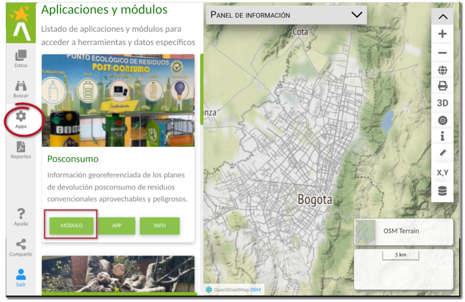
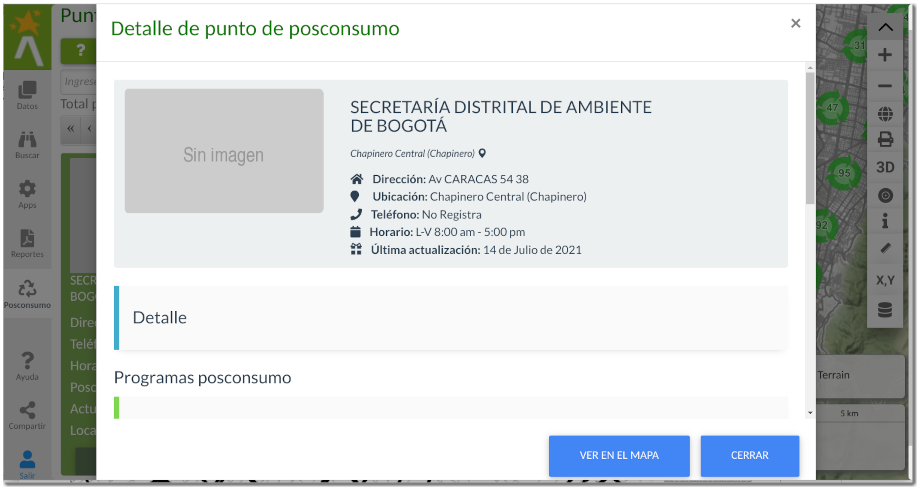

Puntos ponsconsumo¶
Los puntos de posconsumo son la localización de los sitios donde se lleva a cabo la recolección de residuos que son altamente contaminantes para el ambiente y que requiere un tratamiento especial es su reutilización y desecho. Esta funcionalidad permite a los ciudadanos, primero conocer todos los puntos de limpios de la ciudad, ofreciendo la posibilidad de encontrar los puntos más cercanos a su ubicación y segundo permite recoger información de los usuarios a través de comentarios y redes sociales la actualización de funcionamiento y condiciones de estos puntos limpios y los programas de posconsumo de residuos.
Un punto de posconsumo es la ubicación puntual de un establecimiento público o privado donde de realiza la recolección de residuos, los cuales se encuentran agrupados en programas, cada uno con unas condiciones de recolección.
Panel lateral de Posconsumo¶
Para acceder a la funcionalidad de puntos de posconsumo, haga clic en el botón del panel lateral con el icono de módulos y aplicaciones 

y luego seleccionar el módulo posconsumo. Esto permite el despliegue de la información de todos los puntos de posconsumo del Distrito Capital en el mapa y en la barra lateral. La representación en el mapa se realiza como una aglomeración o clúster de puntos de posconsumo, es decir muestra la concentración o ausencia de puntos en la ciudad. A medida que se realiza el acercamiento en el mapa, se encuentra el detalle de ubicación del punto de posconsumo.

en el panel lateral de puntos de posconsumo, se ofrecen algunas herramientas que se detallaran en las siguientes secciones, como (1) consultar información sobre puntos de posconsumo, (2) para cambiar el estado de visualización de los puntos de posconsumo en el mapa, (3) refrescar el listado de puntos de posconsumo, (4) consultar las estadísticas relacionadas a los puntos de posconsumo, (5) para filtrar la lista de puntos de posconsumo y (6) para generar el reporte de puntos de posconsumo.
Detalle del punto de posconsumo¶
Al realizar el acercamiento a los puntos de posconsumo y al hacer clic sobre alguno de los mismo, se realiza el despliegue de la ventana emergente de información resumen, al hacer clic sobre el nombre del punto o al acceder a través de los botones de detalle del panel lateral para acceder a la información del punto de posconsumo.

El detalle de este punto de posconsumo muestra información del nombre del establecimiento, teléfono de contacto, horario de atención, dirección, fotografía de ubicación y la fecha de actualización de dicha información.
Este punto de posconsumo acoge algunos programas de puntos limpios, asociado a un residuo específico y unas condiciones para la recolección de dicho residuo.
Adicionalmente este punto de posconsumo puede ser compartido a través de redes sociales y contribuir a través e comentarios para recoger información por parte de la ciudadanía acerca de cambios de información del punto.
Filtrar puntos de posconsumo¶
Para realizar el filtro de puntos de posconsumo por tipo de residuo y localidad haga clic sobre el botón con el icono de Filtrar puntos posconsumo
esto permite el despliegue del formulario para la selección de criterios de filtro y representación final en el mapa.

Al ejecutar el filtro la representación en el mapa de los puntos de posconsumo que coincide con los criterios seleccionados se realiza por agrupación o aglomeración de puntos, es decir a mayor tamaño del icono o punto, muestra las zonas con mayor concentración. El filtro también debe mostrar la información tabular en el panel lateral que coincide con los criterios seleccionados.